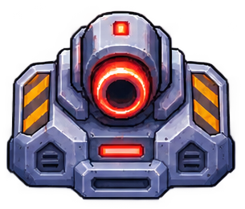
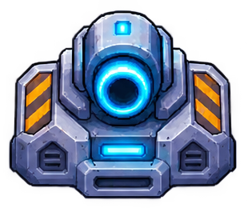

CAÑÓN ROJO
Derriba átomos de O₂ rojo.
Planta de recursos · inicializando
Cargando cámara de reacción… 0%
Estación lunar · planta de recursos
Haz clic, toca o pulsa ESPACIO para disparar. Flechas ← → para apuntar.
Minijuego · 25 segundos
La cámara libera átomos de oxígeno (rojos) e hidrógeno (azules). El cañón alterna de color: destruye cada átomo con el cañón correcto antes de que acabe el turno.

Derriba átomos de O₂ rojo.

Derriba átomos de H₂ azul.
Consejo: apunta a los átomos que coincidan con el color del cañón. El cañón se recolorea solo.
Informe de turno
OPERADOR EN PRÁCTICAS
Precisión = aciertos ÷ disparos × 100.
Energía simulada = aciertos × 12 Wh × (0.5 + 0.5 × precisión/100).
Agua perdida simulada = 6 + fallos × 2.6 + (100 − precisión) × 0.22, limitada a 100 %.
Son valores de juego con fin educativo; no miden un electrolizador real.